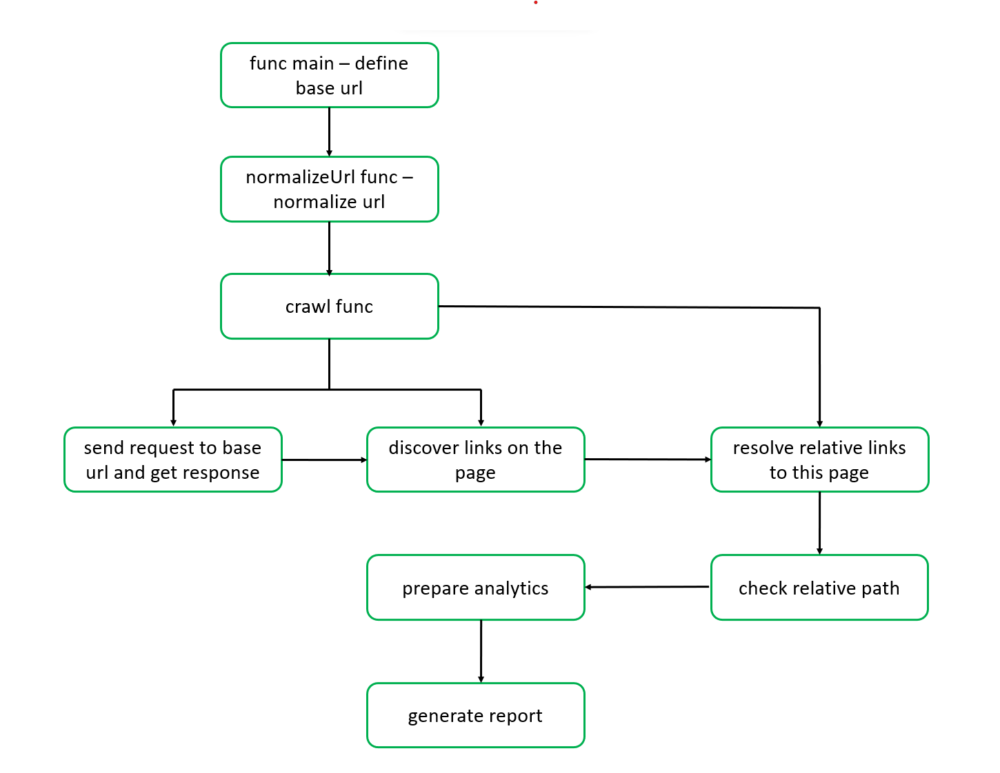
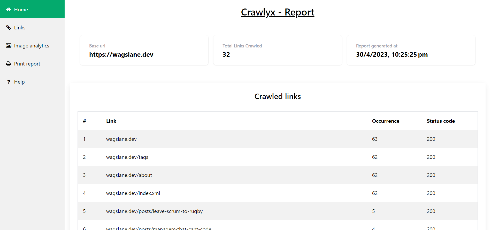

Introduction
Crawlyx is a powerful CLI-based web crawler built using Node.js that can help you extract valuable data from websites and improve your website's SEO ranking. Whether you're a marketer, SEO professional, or web developer, Crawlyx can be an essential tool in your arsenal for website analysis, optimization, and monitoring.
With Crawlyx, you can easily crawl any website and extract data such as page titles, meta descriptions, headings, links, images, and more. You can also use Crawlyx to analyze the internal linking structure of a website, identify broken links, duplicate content, and other issues that may be hurting the SEO ranking of your website.
In addition, Crawlyx provides a custom report feature that allows you to generate detailed reports based on the data extracted from websites. You can generate reports in various output formats such as CSV, JSON, and HTML, and customize the report to include or exclude specific data fields.
With the HTML report feature, you can generate visually appealing reports that provide insights into the SEO ranking, user experience, and other aspects of a website. These reports can help you make data-driven decisions and optimize your website for better performance.
So if you want to improve your website's SEO ranking, optimize your content, and stay on top of changes to your website, Crawlyx is the tool for you. Try Crawlyx today and unleash the power of web crawling!
Features
- 1. Web Crawling: Crawlyx can crawl any website and extract valuable data such as page
titles, meta descriptions, headings, links, images, and more.
- 2. SEO Analysis: Crawlyx can analyze the internal linking structure of a website,
identify broken links, duplicate content, missing tags, and other issues that may be hurting the
SEO ranking of your website.
- 3. Customizable Reports: Crawlyx provides a custom report feature that allows you to
generate reports in various output formats such as CSV, JSON, and HTML. You can customize the
report to include or exclude specific data fields and generate visually appealing reports that
provide insights into the SEO ranking, user experience, and other aspects of a website.
- 4. User-Friendly CLI: Crawlyx has a user-friendly command-line interface that makes it
easy to use, even for those who are not familiar with web crawling or programming.
- 5. Cross-Platform Support: Crawlyx works on multiple platforms, including Windows, Mac,
and Linux.
- 6. Open-Source: Crawlyx is an open-source project, which means that its source code is
freely available for anyone to use and contribute to.
With these features, Crawlyx can be a valuable tool for marketers, SEO professionals, web developers,
and anyone who needs to extract data from websites or monitor changes to a website.
Installation
Using NPM
npm i -g crawlyx
npm i -g crawlyx
OS supports
Windows (7, 8, 10, and Server versions)
macOS (10.10 and higher)
Linux (Ubuntu, Debian, Fedora, CentOS, etc.)
✅
✅
✅
| Windows (7, 8, 10, and Server versions) | macOS (10.10 and higher) | Linux (Ubuntu, Debian, Fedora, CentOS, etc.) |
|---|---|---|
| ✅ | ✅ | ✅ |
How it works?
- 1. Parsing the command-line arguments: Crawlyx uses the popular commander.js library to
parse
the command-line arguments and options. This allows users to specify the website URL, the output
format and other options.
- 2. Crawling the website: Crawlyx uses the
fetch function and
JSDOM library to crawl the website and extract data such
as page titles, meta descriptions, headings, links, images, and other elements. This data is
stored in an internal data structure that can be processed and exported later.
- 3. Analyzing the website: Crawlyx uses various algorithms to analyze the internal linking
structure of the website, identify broken links, duplicate content, missing tags, and other
issues that may be hurting the SEO ranking of the website.
- 4. Generating the report: Crawlyx uses the specified output format to generate the
report. This
can be in CSV, JSON, or HTML format, depending on the user's choice. The report contains various
data fields such as page title, meta description, headings, links, images, and other data
extracted from the website.

fetch function and
JSDOM library to crawl the website and extract data such
as page titles, meta descriptions, headings, links, images, and other elements. This data is
stored in an internal data structure that can be processed and exported later.The code flow of Crawlyx is designed to be flexible and customizable, allowing users to extract the data they need and generate reports that provide valuable insights into the website's performance.
Examples
Suppose you want to use Crawlyx to crawl your website and generate a report that will provide insights into the website's performance.
Here's how you could use Crawlyx to achieve this:
1. Run Crawlyx with the following command:
crawlyx https://example.com
This command tells Crawlyx to crawl the website https://example.com
2. Wait for Crawlyx to finish crawling the website. Depending on the size of the website, this could take several minutes or even hours.
3. Once Crawlyx has finished crawling, it will automatically open the report.html file
in your default web browser. You'll see a comprehensive report that includes data such as page
titles, meta descriptions, headings, links, images, and other elements of the website.
4. Use the report to identify areas of the website that need improvement. For example, you might discover that certain pages have missing or duplicate meta descriptions, broken links, or poor internal linking structure

View dummy report
Found a problem with this page?
- Edit on GitHub
- Source on GitHub
- Report a problem with this content on GitHub
- Want to fix the problem yourself? Learn how to contribute!